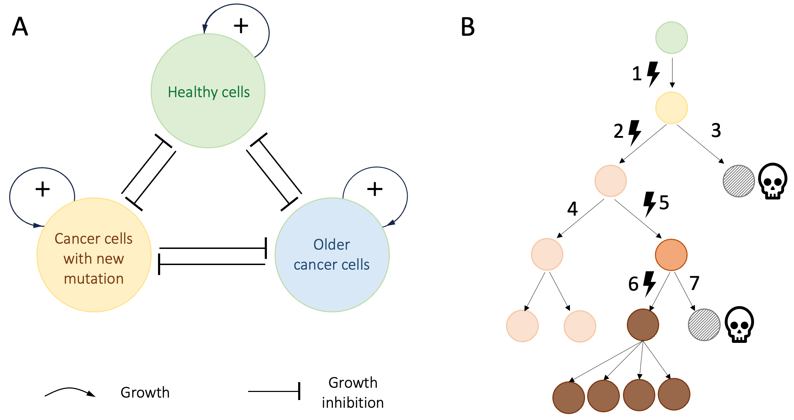
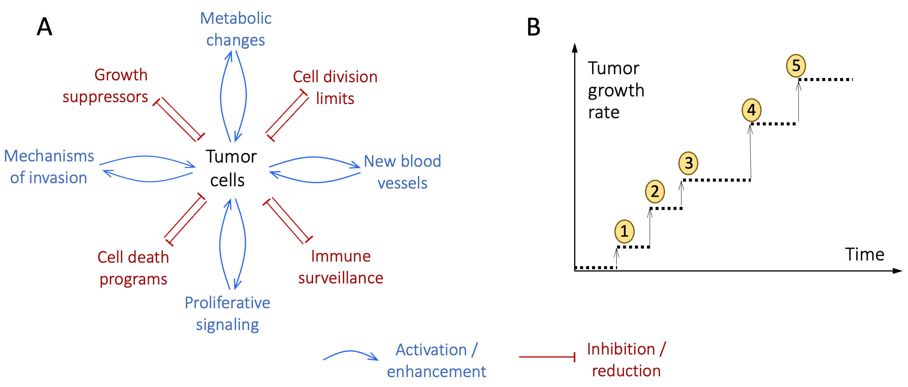
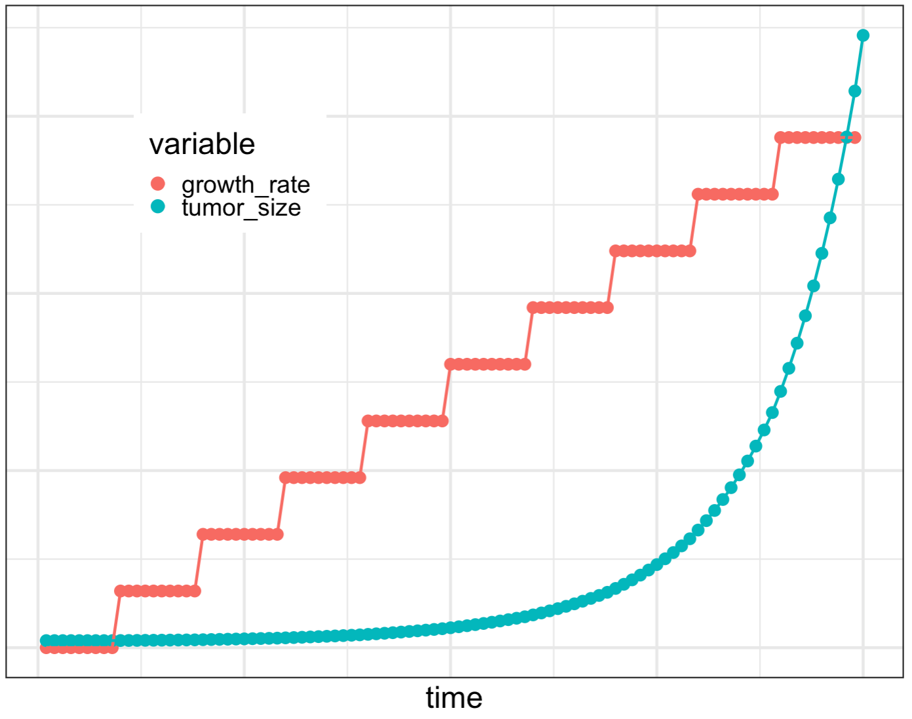

9 Cancer as a Form of Runaway Polarization
We saw in the previous chapter that in natural systems interactions among system components determine how those components behave, and in doing so regulate the behavior of the system as a whole. This chapter explores what happens when some members of a community do not adhere to the rules that enable the community to function and survive. Specifically, I will review recent research suggesting that cancers are the products of “rogue” or “cheating” cells that break the rules and hijack a body’s resources for selfish gains, ultimately destroying the body that hosts them.
We will start with an introduction to cancer as a medical and biological phenomenon, review the common characteristics of all the different forms of cancer, and then focus on how cancer cells break the rules that enable multicellular life.
Note that, in what follows, I am going to focus on non-transmissible cancers. In Tasmanian Devils, dogs, and some sea organisms, unusual circumstances allow cancerous cells to transplant themselves from one animal to another while avoiding detection by the host’s immune system 1. Transmissible cancers in humans are extremely rare and have so far only been seen in people with altered immune systems 2,3. The discussions that follow do not address this special class of cancers.
9.2 The Hallmarks of Cancer
In January 2000, two prominent cancer researchers, Robert Weinberg and Douglas Hanahan wrote an influential review 32 in which they argued that cancer research had reached a point where “adding further layers of complexity to a scientific literature that is already complex almost beyond measure” was no longer helpful. Instead, they suggested:
We foresee cancer research developing into a logical science, where the complexities of the disease, described in the laboratory and clinic, will become understandable in terms of a small number of underlying principles.
Hanahan and Weinberg went on to describe six “Hallmarks of Cancer”, capabilities that a healthy cell must acquire in order to become a malignant cancer cell.
In 2011, Hanahan and Weinberg published an update 33 and added four more traits that characterize cancerous cells. Together, the papers have become two of the most celebrated papers in cancer biology. As of February 2026, the Hallmarks of Cancer have been cited more than 46,000 times according to Google Scholar.
Below, I have ordered the 2011 list of 10 Hallmarks of Cancer into two groups to emphasize their distinct and complementary functions 76. The Hallmarks in the first group facilitate the onset of cancer, while each Hallmark in the second group amplifies a self-reinforcing positive feedback loop on tumor growth (we will come back to this point shortly).
Group 1 Cancer Hallmarks cause mutations. The Hallmarks in this group constitute two different molecular processes through which cancer cells create conditions that favor the emergence of cancer-causing mutations.
Deregulating genome replication. As discussed in Box 9.1, healthy cells are equipped with an extensive array of resources to ensure high-fidelity replication of the genome every time a new cell is created. Mutations in cancer cells abrogate these processes, leading to increased rates of DNA-replication errors (mutations).
In many cases, newly acquired mutations cause their host cells to function poorly. Such cells can’t compete with more aggressively growing cancer cells and will eventually die out. Other cancer cells acquire mutations that improve their ability to proliferate, either out-competing other cancer cells locally or by moving to other organs. Over time, these cells become the dominant cancerous population.
Creating chronic inflammation. Inflammation is the coordinated response of the immune system to infections and injuries. Healthy inflammation has two parts 34. Initially, it leads to the release of highly-damaging chemicals that destroy pathogens and infected cells. After the danger is neutralized, the immune response is switched to re-building and healing the tissue 34.
In chronic inflammation, the two phases of inflammation are constantly ongoing and become overlapping. Consequently, cellular growth (tissue re-building) happens at the same time as neutrophils and other immune cells are secreting toxic chemicals to remove damaged cells. The result is a proliferation of cells with damaged/mutated genomes 35.
Group 2 Cancer Hallmarks enable endless growth. This group of Cancer Hallmarks builds on the mutation-generating Group1 Hallmarks to give cancer cells the ability to modify themselves and other cells in their environment. These modifications allow cancer cells to grow without end, locally and elsewhere.
Avoiding destruction by immune cells. Mutations in the genomes of cancer cells typically lead to the production of proteins that are not seen in healthy cells. Under normal circumstances, immune cells will identify cells producing abnormal proteins and destroy them. But, in a process that is not yet fully understood, tumor cells manage to evade detection and destruction by the immune system.
Resisting cell death. Healthy cells age over time, and eventually orchestrate their own death via internal gene regulatory programs. The remnants of dead cells are then recycled by specialist cells that detect and process the debris. Cancer cells use many different mechanisms to disable this in-built program of cell death.
Overcoming in-built limits on proliferation. Apart from stem cells, the genomes of healthy cells include structures that limit how many times they can be replicated. In addition, regulatory signals from other cells, limited space, oxygen, nutrient, and energy availability all make cellular growth inherently self-limiting. Cancer cells find ways of overcoming each of these constraints and keep proliferating.
Sustaining proliferative signaling. In healthy tissues, homeostatic signaling (see Chapter 7) maintains the numbers of each cell type at a predetermined level. If cells die or move elsewhere, the event is marked by proliferative signals that bring the cell counts back to the normal operating levels. Cancer cells either continually generate such proliferative signals themselves, or cue other cells in their microenvironment to generate proliferative signals that aid tumor growth.
Evading growth suppressors. In healthy cells, a number of genes are dedicated to ensuring that cells divide only under very specific conditions. These genes are typically turned off or bypassed in cancer cells.
Deregulating cellular metabolism. Growing tumors typically exhaust the local supply of nutrients and oxygen. Cancer cells develop ways of consuming much more energy than healthy cells, and deprive their healthy neighbors of energy 36–38. The metabolic processes of cancer cells also generate much more waste than healthy cells. Thus, cancer cells not only cheat to use more than their share of resources, they also stress and inhibit other cells by pumping out large amounts of waste products.
Inducing new blood vessels. Cancer cells induce the creation of new blood vessels as a way of increasing the amount of energy, nutrients, and oxygen available to the tumor at the expense of the rest of the body.
Activating cell migration and invasion. Tumors ultimately grow bigger than any given organ can support. Cancerous mutations trigger a sequence of processes that enable cancer cells to continue their growth by seeding tumors in additional organs. To do this, cancer cells first become independent of the physical and biochemical support of other cells and the Extra-Cellular Matrix 39. Once free, the cells migrate out of the confinement of their host organ, travel to another organ, and integrate themselves into their new environment. The mechanisms by which tumor cells carry out these steps are different in different cancers 40, but the conceptual sequence of events is the same.
Since the Hallmarks of Cancer are true for nearly all cancers, they are useful concepts both for developing cancer treatments, and also as a summary of the cellular processes that are altered in cancer.
Box 9.1. Why Don’t We Get Cancer More Often? 77
Given everything our cells go through in life, and the self-fulfilling nature of cancer-driving mutations, why don’t we get cancer earlier in life, and why do some people not get cancer at all? The short answer is that our cells have evolved to include many checks and balances that detect and eliminate tumors before they become a problem.
Worldwide, around 20 million people get cancer every year 41. In the western world, close to one in three people will develop cancer before they reach 75 years of age, and about one in ten will die from cancer. So, in a very real sense, there is way too much cancer in the world. On the other hand, if we consider how many copies of our genome we make in the course of a lifetime, it is really remarkable that we live cancer-free for as long as we do.
New cells are created by first copying the DNA of the parent cell and then dividing the cell in two. Many such cell divisions happen during embryonic development, childhood, and later whenever a cell dies and is replaced. The process of copying our roughly three billion DNA nucleotides at each cell division leads to inevitable copying errors. As a result, except perhaps for a minority of identical twins 42, no two humans have identical DNA sequences.
The DNA that we pass on to our children comes from special set-aside (germline) cells. On average, the heritable genomes of two unrelated people will be different in about 20 million nucleotides 43. Some of these variations may have no biochemical or functional effect. At present, it is not clear what proportion of DNA variants have a functional effect 44–46. But what we can say for sure is that we each start life with a different genomic background.
Our genomic differences start with the fertilized egg. As a fertilized egg divides to become an embryo and then a fetus, an infant, a child, and an adult, DNA-replication errors are introduced into the cells that make up our bodies 47. To minimize the number of DNA replication errors, our bodies have developed an impressive array of mechanisms, including:
Special machinery in our cells ensure high-fidelity DNA replication by proofreading and correcting new DNA nucleotides as they are synthesized. This process is estimated to improve DNA fidelity by as much as 1000-fold 48.
Multiple DNA repair processes involving dozens of proteins correct any DNA-damage caused by factors such as radiation and chemicals 49,50.
Built-in mechanisms limit how many times cells can divide, making sure wayward cells don’t persist and accumulate in the body 51,52.
Stem cells are organized into hierarchies that minimize the number of divisions each cell needs to go through during our lifetimes 53,54.
Special gatekeeper genes monitor the state of a cell and inhibit unexpected cell divisions and other cancer-like behaviors 55.
Distributed regulation of cellular behavior by other cells minimizes opportunities for cells to deviate from their expected behaviors 56,57.
Constant surveillance by tissue-resident and circulating immune cells detects and destroys diseased cells 58 (see discussion of neutrophils in the previous chapter).
The first four of the above mechanisms minimize the risk of cancer initiation/progression, while the last three mechanisms enforce how cells are expected to behave in a multicellular body. For brevity, I will not describe the above mechanisms further. Suffice it to say that our bodies spend a considerable proportion of their resources on guarding against cancer.
There are, however, fundamental limits to how thoroughly evolution can counter the incidence of DNA-replication errors 59–61. Mutations are inevitable, and given the roughly four million new cells that our bodies make every second 62, it is really amazing how effectively our cells minimize the risk of cancer-causing mutations arising and persisting in our bodies.
9.3 Cancer Cells Break the Rules Essential for Multicellular Life
In a multi-disciplinary paper published in 2015 63, Athena Aktipis and her collaborators proposed five essential conditions for multicellular life, and then noted that cancer cells break all of these rules 78. I will describe these conditions below, and highlight their similarity to other forms of self-organized and self-managed communal ventures discussed in earlier chapters.
Controlled growth. Apart from stem cells whose job it is to generate new cells as needed, other cells in our bodies either do not multiply, or they do so for only a limited number of times, or under very specific and highly regulated conditions (e.g. immune cells responding to an infection). This process is regulated both internally, and through interactions with other cells 64. Unlike our corporations, which tend to grow until they dominate markets 65, our bodies maintain their cellular diversity by limiting growth.
In-built cell death. In a multicellular organism, different cell types have different lifespans. Each cell orchestrates its own death and recycling in a way that ensures smooth and efficient functioning of the organism. For example, we saw in the last chapter that our neutrophils are replaced daily to ensure that their toxic contents are not accidentally released into the body. In contrast, most neurons in our brains last our entire lives 66. Such diversity of lifespan is a necessary part of the division of labor within our bodies, and it is a self-regulated process. In situations where self-regulated cell death fails, immune and other local cells act to destroy damaged and infected cells 67.
Division of labor and compartmentalization. There are at least 400 cell types in the human body, each performing a distinct function 68. In addition to this cellular diversity, our bodies are compartmentalized into organs, each of which is made up of several distinct structures and tissues. Within each compartment, cells work together to perform specific functions without interfering with - or interference from - the functions of other compartments.
The division of labor among our cells is analogous to David Ricardo’s idea that specialization and trade benefit all sides (see Chapter 6). Human cells live in the highly-supportive environment of the body at the cost of mutual interdependence.
Shared maintenance of the cellular (micro)environment. In healthy tissues, the space between cells contains proteins that provide structural support; it also acts to tether cells in place, and is the medium through which nutrients are delivered to cells and waste products are removed. Cancer cells modify this microenvironment to their own benefit. For example, in order to grow and move more freely, they degrade the proteins that give structure to the extra-cellular space and support non-cancer cells, and they generate signals that increase the local blood supply at the expense of cells elsewhere 69,70.
Consistent with Elinor Ostrom’s eight principles, the cooperative interactions that maintain healthy cellular microenvironments are organized in a distributed, layered fashion. Cells in operate in local microenvironments, but microenvironments coordinate among regionally, and at the organ and whole-body levels 71,72.
Regulated resource allocation. All cells require energy and nutrients to survive. Cellular metabolic systems not only generate energy and nutrients from food and oxygen, they also collect cellular waste products and recycle them. These programs have to adjust to external conditions such as the need for a sudden burst of energy, or the sudden rise of blood sugar after feeding.
Oxygen, nutrients, and energy are common goods in the body, analogous to the common pasture area in the Tragedy of the Commons game 73. By cooperating and regulating their uptake, the cells in a body maximize their long-term returns (the healthy lifespan of the body).
As Aktipis and colleagues pointed out, cancer cells break every one of the essential conditions for multicellular life, cheating to benefit themselves in the short-term at the expense of other cells and the body as a whole. A pair of excellent books by Aktipis 74, and the science writer Kat Arney 75 discuss the above ideas extensively, so I will not describe them in detail here. Suffice it to say that four of the five essential conditions for multicellularity have direct counterparts in the Hallmarks of Cancer.
Division of labor is the only multicellularity requirement not specifically among the original list of Cancer Hallmarks, but it has since been proposed as a candidate new Hallmark 76,77. While the underlying mechanism differs among different types of cancer, in general cancer cells stop performing their healthy functions and become more like undifferentiated stem cells. In this sense, cancer cells break the Division of Labor rule of multicellularity.
In support of the Aktipis et al “cancer-cells as cheaters” model, subsequent studies have found that the genes most commonly altered in cancer tend to be those necessary for multicellularity 78,79. For example, as discussed earlier, cancer cells switch their metabolism to escape the energy consumption constraints that healthy cells abide by. To do so, cancer cells use a more wasteful metabolic pathway that was originally used by our single-cell ancestors, allowing them to break the “regulated resource allocation” rule and proliferate 80.
9.4 Tumor Growth as a Form of Runaway Polarization
We saw earlier that, by overcoming all the various the regulatory mechanisms that constrain the growth of healthy cells, the eight Group 2 Hallmarks of Cancer enable endless tumor growth. Under ideal laboratory conditions with unlimited nutrient supplies, and no physical crowding effects, healthy cells will divide at a constant rate, leading to exponential growth. Untreated cancer cells inside human bodies, increase their growth rates over time because some mutations speed up proliferation 81–87. Faster-growing tumor cells quickly out-compete other tumor cells, so that the tumor ends up with a hockey-stick shaped growth curve.
Figure 9.1 presents a broad-brush model of the interactions that lead to runaway proliferation of untreated cancers cells. Cancer cells are constantly reproducing (self-amplifying). In the process, they acquire random new mutations. As a result, the cancer cells inside a tumor are not a homogeneous group. Cancer cells with new mutations compete with earlier generations of cancer cells and with local healthy cells for physical space, oxygen, nutrients, and “environmental services” such as waste removal, structural support, compartment maintenance, etc. Cells that can exploit supplies and services most efficiently will proliferate more, creating RAP-inducing feedback interactions (Figure 9.1A) akin to the two tightly-planted-saplings example presented in Chapter 4.
Figure 9.1.B shows a schematic example of the evolution of a single tumor. In this simplified example, a single healthy cell (green disk at the top) acquires a mutation (lightning icon 1) as it divides, and gives rise to a cancer founder-cell. This cell goes on to acquire three more mutations during subsequent cell divisions (lightning icons 2, 5, 6). At any given time, the cancer cells compete with each other as well as with healthy cells for the limited resources that the body provides.

Figure 9.1. RAP dynamics drive runaway growth of untreated cancer cells. A. self-amplification combined with competition for limited resources in cancer. The positive feedback loops indicate exponential population growth. The lines ending in bars indicate mutual inhibition of growth. B. simplified example of how cancer cells evolve in a tumor. Time is represented as running from top to bottom. The healthy cell giving rise to the founding cancer cell is indicated at the top. Each row represents a new generation of cells.![Lightning bolt with solid fill][image1]symbols indicate mutations. Hatched disks represent cells that lose the competition for resources and die. At any given time, the tumor cells that (here, the pink and brown cells), compete with each other for available resources.
Every time a new mutation creates a faster-diving tumor cell, the descendants of that cell become the dominant tumor cell population and increase the tumor growth rate as whole. In theory, this process could lead to ever faster tumor growth rates. But in practice, tumors must overcome the growth constraints in Group2 Cancer Hallmarks (summarized in Figure 9.2A) in order to continue growing. The extent to which new mutations impact tumor growth varies from cancer to cancer and patient to patient. On rare occasions, tumors can even regress spontaneously 88,89. But recent multi-year data for large numbers of untreated cancers suggest that, tumor growth rates typically increase over time 82,87. Figure 9.2B visualizes this process schematically.

Figure 9.2. Drivers of runaway tumor growth. A. Schematic representation of the inhibition-of-growth-inhibitor (red) and activation-of-growth-enhancer (blue) positive feedback loops activated by Group 2 Cancer Hallmarks. B. Schematic visualization of a sequence of growth-enhancing mutations (numbered disks) arising in a hypothetical tumor. Each new mutation increases the growth rate of its host cell, which then becomes the dominant tumor population. The timings of the events, and the sizes of increases in the tumor growth rate will vary from cancer to cancer and are only indicated here as examples.
Figure 9.3 shows an illustrative example of how increasing growth rates produce explosive (hockey-stick) growth in tumor size 79. Here, for simplicity, I have assumed that growth-rate enhancing mutations arise sequentially at regular intervals, and that each event increases the rate of tumor growth by the same fixed amount (see stepwise coral curve). The turquoise curve shows the resulting changes in tumor size over time.
The stepwise increases in the tumor growth rate in this example are analogous to the savings account example in Chapter 2, in which the rate of interest increased with the account balance and resulted in RAP. But unlike investments, tumors cannot grow indefinitely. Ultimately, the many ways in which cancer cells breaks the rules of healthy multicellular life leads them to exceed the limits of what the body can support. Both the cancer, and the body it exploited (the “community” in the Tragedy of the Commons) die. Everybody loses.

Figure 9.3. Tumor evolution leads to explosive growth. In this illustrative example, a sequence of mutations is assumed to sequentially increase the tumor growth rate (ochre stepwise curve). The increasing growth rate leads to the characteristic explosive growth seen in RAP (blue curve).
9.5 Cancer as a Metaphor for Societal Runaway Polarization
Multicellular organisms are communities of cells that cooperate with each other such that the community as a whole thrives. By breaking the rules for communal living, tumor cells gain short-term growth advantages at the cost of the long-term survival of the body that sustains them. These dynamics are analogous to the Prisoner’s Dilemma and Tragedy of the Commons games. In all three cases, in the long run, cooperation is the best strategy for all concerned. Cheaters can gain temporary (short-term) advantages, but in the long run, everybody loses.
Viewed as runaway processes, cancer and societal RAP have many characteristics in common. They also have some notable differences. Both RAP and cancer involve runaway growth by a subset of a population. For tumors, runaway growth is short-lived (the cancer destroys itself by killing its host). In the case of societal RAP, runaway growth of abstract quantities such as wealth, power, opportunity, and political sentiments, has no fundamental limits and can continue for extended periods.
Cancer and RAP also both involve the unbalanced flow of community resources (e.g. metabolic resources for tumors, earnings or influence in RAP). In both cases, some resources effectively become unavailable to a portion of the community. Some types of RAP – such as in wealth or education – primarily limit opportunities for those on the losing side. But polarization along other dimensions such as religious belief or political leaning deprives both sides of enriching experiences, cross-fertilization of ideas, social influence, and sometimes even trade.
Thinking of polarization as increasing inequality suggests a third commonality between cancer and RAP: In people with cancer, tumors modify the behavior of the rest of the body to favor their own growth. Healthy cells end up on the losing side of an uneven playing field, unable to compete with cancer cells. Analogously, in societal RAP, polarized groups use all their group’s resources to modify societal rules in their own favor. Both cancer and RAP create uneven playing fields, unfair competitions, and loaded dice. Analogies are not proofs. But it seems clear that when we allow RAP to create cancer-like growths in our societies, we are endangering the long-term health of our communities.
Aktipis and colleagues have shown that cheating cells are a common phenomenon across all multi-cellular life forms. Given that such behavior is ultimately self-defeating, why does cheating arise? One reason is that competition for limited resources seems unavoidable in nature. We could choose to share. But with people we don’t trust, the everyone-for-themselves strategy is the rational least-bad option.
A limited amount of zero-sum competition (and therefore inequality) is not a bad thing. It can increase productivity, and motivate innovation and improvement. However, as the management guru Margaret Heffernan argues in her 2014 book, “A Bigger Prize: Why Competition Isn’t Everything and How We Do Better”, fierce competition for rare, large, rewards is inherently counter-productive because it leaves most participants worse off from the effects of infighting. In a final irony, for many people, the feeling that they cannot win, that the decks are stacked against them, leads to the conclusion that their only realistic chance of success in a RAP-driven world is through cheating 90, a positive feedback loop creating ever more RAP.
9.6 References
1. Silva, R. C. M. C., Panis, C. & Pires, B. R. B. Lessons from transmissible cancers for immunotherapy and transplant. Immunol. Med. 45, 146–161 (2022).
2. Greaves, M. & Hughes, W. Cancer cell transmission via the placenta. Evol. Med. Public Health 2018, 106–115 (2018).
3. Muehlenbachs, A. et al. Malignant Transformation of Hymenolepis nana in a Human Host. N. Engl. J. Med. 373, 1845–52 (2015).
4. Sontag, S. Illness as Metaphor. (Vintage, First Edition, 1979).
5. Le, Q. et al. Cbfa2t3-Glis2 Oncogenic Fusion Is Sufficient for Leukemic Transformation. J. Clin. Invest. 132, e157101 (2022).
6. Ding, S. J., LiCaesar-Johnson & Network, T. C. G. A. R. Perspective on Oncogenic Processes at the End of the Beginning of Cancer Genomics. Cell 173, 305-320.e10.
7. Chalmers, Z. R., Connelly, C. F., Fabrizio, D., Gray, L., & others. Analysis of 100,000 human cancer genomes reveals the landscape of tumor mutational burden. Genome Med. 9, 34 (2017).
8. Gerstung, I., M. ,. Jolly, C. ,. Leshchiner & PCAWG Consortium Evolution & Heterogeneity Working Group. The evolutionary history of 2,658 cancers. Nature 578, 122–128 (2020).
9. Alexandrov, L. B., Kim, J., Haradhvala, N. J., & others. The repertoire of mutational signatures in human cancer. Nature 578, 94–101 (2020).
10. GBD 2016 Occupational carcinogens collaborators. Global and regional burden of cancer in 2016 arising from occupational exposure to selected carcinogens: a systematic analysis for the Global Burden of Disease Study 2016. BMJ Occup. Environ. Med. 77, 151–159 (2019).
11. Mattia Garutti, M. et al. Hereditary Cancer Syndromes: A Comprehensive Review with a Visual Tool. Genes Basel 14, (2023).
12. de Martel, C., Georges, D., Bray, F., Ferlay, J. & Clifford, G. M. Global burden of cancer attributable to infections in 2018: a worldwide incidence analysis. Lancet Glob. Health 8, e180-90 (2020).
13. Cohen, L. & Jefferies, A. Environmental exposures and cancer: using the precautionary principle. Ecancermedicalscience 13, ed91 (2019).
14. Little, M. P. et al. Review of the risk of cancer following low and moderate doses of sparsely ionising radiation received in early life in groups with individually estimated doses. Environ. Int. 159, 106983 (2022).
15. Larsen, K., Rydz, E. & C.E, P. Inequalities in Environmental Cancer Risk and Carcinogen Exposures: A Scoping Review. Int. J. Environ. Resesearch Public Health 20, 5718 (2023).
16. Kjaer, S. K., Dehlendorff, C., Belmonte, F. & Baandrup, L. Real-World Effectiveness of Human Papillomavirus Vaccination Against Cervical Cancer. J. Natl. Cancer Inst. 113, 1329–1335 (2021).
17. Lei, J. et al. HPV Vaccination and the Risk of Invasive Cervical Cancer. N. Engl. J. Med. 383, 1340–1348 (2020).
18. Crosby, D. et al. Early detection of cancer. Science 375, eaay9040 (2022).
19. Juliusson, G. et al. Age and acute myeloid leukemia: real world data on decision to treat and outcomes from the Swedish Acute Leukemia Registry. Blood 113, 4179–4187 (2009).
20. Bolouri, H. et al. The Molecular Landscape of Pediatric Acute Myeloid Leukemia Reveals Recurrent Structural Alterations and Age-Specific Mutational Interactions. Nat. Med. 24, 103–112 (2018).
21. Sosinsky A, Ambrose, J., Cross, W., Murugaesu, N., & the Cancer Programme of the 100,000 Genomes Project. Insights for precision oncology from the integration of genomic and clinical data of 13,880 tumors from the 100,000 Genomes Cancer Programme. Nat. Med. 30, 279–289 (2024).
22. The ICGC/TCGA Pan-Cancer Analysis of Whole Genomes Consortium. Pan-cancer analysis of whole genomes. Nature 578, 82–93 (2020).
23. Calvo, C. et al. Infant Acute Myeloid Leukemia: A Unique Clinical and Biological Entity. Cancers Basel 13, 777 (2021).
24. Carr, J. A. et al. The association of HER-2/neu amplification with breast cancer recurrence. Arch. Surg. 135, 1469–74 (2000).
25. Andrulis, I. L. et al. neu/erbB-2 amplification identifies a poor-prognosis group of women with node-negative breast cancer. Toronto Breast Cancer Study Group. J. Clin. Oncol. 16, 1340–9 (1998).
26. Stebbing, V., J, Baranau, Y, Baryash et al. Six-Year Survival Outcomes for Patients with HER2-Positive Early Breast Cancer Treated with CT-P6 or Reference Trastuzumab: Observational Follow-Up Study of a Phase 3 Randomised Controlled Trial. BioDrugs 37, 433–440 (2023).
27. Prasad, V. Our best weapons against cancer are not magic bullets. Nature 577, 451 (2020).
28. Prasad, V. The precision-oncology illusion. Nature 537, 563 (2016).
29. Prasad, V., De Jesús, K. & Mailankody, S. The high price of anticancer drugs: origins, implications, barriers, solutions. Nat. Rev. Clin. Oncol. 14, 381–390 (2017).
30. Bolouri, H. et al. Inflammatory Bone Marrow Signaling in Pediatric Acute Myeloid Leukemia Distinguishes Patients with Poor Outcomes. Nat. Commun. 13, 7186 (2022).
31. Huntington, S. F., Davidoff, A. J. & Gross, C. P. Precision Medicine in Oncology II: Economics of Targeted Agents and Immuno-Oncology Drugs. 38, 351–359 (2019).
32. Hanahan, D. & Weinberg, R. A. The hallmarks of cancer. Cell 100, 57–70 (2000).
33. Hanahan, D. & Weinberg, R. A. Hallmarks of cancer: the next generation. Cell 144, 646–674 (2011).
34. Landen, N. X., Li, D. & Stahle, M. Transition from inflammation to proliferation: a critical step during wound healing. Cell. Mol. Life Sci. 73, 3861–3885 (2016).
35. Kiraly, O., Gong, G., Olipitz, W., Muthupalani, S. & Engelward, B. P. Inflammation-Induced Cell Proliferation Potentiates DNA Damage-Induced Mutations In Vivo. PLoS Genet. 11, 1004901 (2015).
36. Pavlova, N. N. & Thompson, C. B. The Emerging Hallmarks of Cancer Metabolism. Cell Metab. 23, 27- (2016).
37. Pfeiffer, T., Schuster, S. & Bonhoeffer, S. Cooperation and Competition in the Evolution of ATP-Producing Pathways. Science 2292, 504–507 (2001).
38. Soares, C. C., Rizzo, A., Maresma, M. F. & Meier, P. Autocrine glutamate signaling drives cell competition in Drosophila. Dev. Cell 59, 1–16 (2024).
39. Deng, Z., Wang, H., Liu, J., Deng, Y. & Zhang, N. Comprehensive Understanding of Anchorage-Independent Survival and Its Implication in Cancer Metastasis. Cell Death Dis. 12, 629 (2021).
40. Clark, A. G. & Vignjevic, D. M. Modes of cancer cell invasion and the role of the microenvironment. Curr. Opin. Cell Biol. 36, 13–22 (2015).
41. Bray, F. et al. Global cancer statistics 2022: GLOBOCAN estimates of incidence and mortality worldwide for 36 cancers in 185 countries. CA. Cancer J. Clin. 74, 229–263 (2024).
42. Jónsson, H. et al. Differences between germline genomes of monozygotic twins. Nat. Genet. 53, 27–34 (2021).
43. The 1000 Genomes Project Consortium. A global reference for human genetic variation. Nature 526, 68–74 (2015).
44. Pennisi, E. Genomics. ENCODE project writes eulogy for junk DNA. Science 337, 1159–1161 (2012).
45. Häsler, J., Samuelsson, T. & Strub, K. Useful ‘junk’: Alu RNAs in the human transcriptome. Cell. Mol. Life Sci. 64, 1793–80 (2007).
46. Doolittle, W. F. Is junk DNA bunk? A critique of ENCODE. Proc. Natl. Acad. Sci. USA 110, 5294–300 (2013).
47. Manders, F., van Boxtel, R. & Middelkamp, S. The Dynamics of Somatic Mutagenesis During Life in Humans. Front. Aging 2, 802407 (2021).
48. Bębenek, A. & Ziuzia-Graczyk, I. Fidelity of DNA replication—a matter of proofreading. Curr. Genet. 64, 985–996 (2018).
49. Hakem, R. DNA-damage repair; the good, the bad, and the ugly. EMBO J. 27, 589–605 (2008).
50. Huang, R.-X. & Zhou, P.-K. DNA damage response signaling pathways and targets for radiotherapy sensitization in cancer. Signal Transduct. Target. Ther. 5, 60 (2020).
51. Campisi, J. Senescent Cells, Tumor Suppression, and Organismal Aging: Good Citizens, Bad Neighbors. 120, 513–522 (2005).
52. Schmitt, C. A., Wang, B. & Demaria, M. Senescence and cancer — role and therapeutic opportunities. Nat. Rev. Clin. Oncol. 19, 619–636 (2022).
53. Nakamuta, A., Yoshido, K. & Naoki, H. Stem cell homeostasis regulated by hierarchy and neutral competition. Commun. Biol. 5, (2022).
54. Carrelha, J. et al. Hierarchically related lineage-restricted fates of multipotent haematopoietic stem cells. Nature 554, 106–111 (2018).
55. Sherr, C. J. Principles of Tumor Suppression. Cell 116, 235–246 (2004).
56. Bissell, M. J. & Hines, W. C. Why don’t we get more cancer? A proposed role of the microenvironment in restraining cancer progression. Nat. Med. 17, 320–329 (2011).
57. Fiore, A. P. Z. P., de Freitas-Ribeiro, P. & Bruni-Cardoso, A. Sleeping Beauty and the Microenvironment Enchantment: Microenvironmental Regulation of the Proliferation-Quiescence Decision in Normal Tissues and in Cancer Development. Front. Cell Dev. Biol. 6, 59 (2018).
58. Finn, O. J. A Believer’s Overview of Cancer Immunosurveillance and Immunotherapy. J. Immunol. 200, 385–391 (2018).
59. Martincorena, I. & Campbell, P. J. Somatic mutation in cancer and normal cells. Science 349, 1483–1489 (2015).
60. Ganai, R. A. & Johansson, E. DNA Replication—A Matter of Fidelity. Mol. Cell 62, 745–755 (2016).
61. Franco, I. et al. Whole genome DNA sequencing provides an atlas of somatic mutagenesis in healthy human cells and identifies a tumor-prone cell type. Genome Biol. 20, 285 (2019).
62. Sender, R. & Milo, R. The distribution of cellular turnover in the human body. Nat. Med. 27, 45–48 (2021).
63. Aktipis, C. A. et al. Cancer Across the Tree of Life: Cooperation and Cheating in Multicellularity. Philos. Trans. R. Soc. B 370, 20140219 (2015).
64. Duronio, R. J. & Xiong, Y. Signaling Pathways that Control Cell Proliferation. Cold Spring Harb. Perspect. Biol. 5, a008904 (2013).
65. Emery, L. & Koëter, J. The Size Premium in a Granular Economy. SSRN http://dx.doi.org/10.2139/ssrn.4597933 (2024).
66. Magrassi, L., Leto, K. & Rossi, F. Lifespan of neurons is uncoupled from organismal lifespan. 110, 4374–4379 (2013).
67. Wang, S., Guo, S., Du, J., Wu, C. & Wu, Y. Cell Death Pathways: Molecular Mechanisms and Therapeutic Targets for Cancer. MedComm 5, e693 (2024).
68. Hatton, I. A., Galbraith, E. D., Merlau, N. S. C. & Shander, J. A. The Human Cell Count and Size Distribution. Proc. Natl. Acdemy Sci. USA 120, e2303077120 (2023).
69. Chitron, E., Rotaru, V., Stefan, D.-C., Gullo, G. & Simion, L. Blocking Tumoral Angiogenesis VEGF/VEGFR Pathway: Bevacizumab—20 Years of Therapeutic Success and Controversy. Cancers 17, 1126 (2025).
70. Liu, X. et al. Decoding Tumor Angiogenesis: Pathways, Mechanisms, and Future Directions in Anti-Cancer Strategies. Biomark. Res. 13, 62 (2025).
71. Turlej, E. et al. Cross-Talk Between Cancer and Its Cellular Environment—A Role in Cancer Progression. Cells 14, 403 (2025).
72. Park, Y.-E., Musson, D. S., Naot, D. & Cornish, J. Cell–Cell Communication in Bone Development and Whole-Body Homeostasis and Pharmacological Avenues for Bone Disorders. Curr. Opin. Pharmacol. 34, 21–35 (2017).
73. Hardin, G. The Tragedy of the Commons. Science 162, 1243–1248 (1968).
74. Aktipis, A. The Cheating Cell: How Evolution Helps Us Understand and Treat Cancer. (Princeton University Press, 2020).
75. Arney, K. Rebel Cell: Cancer, Evolution, and the New Science of Life’s Oldest Betrayal. (BenBella Books, Inc. Texas, 2020).
76. Senga, S. S. & Grose, R. Hallmarks of cancer — the new testament. Open Biol. 11, 200358 (2021).
77. Hanahan, D. Hallmarks of Cancer: New Dimensions. Cancer Discov. 12, 31–46 (2022).
78. Trigos, A. S., Pearson, R. B., Papenfuss, A. T. & Goode, D. L. How the evolution of multicellularity set the stage for cancer. Br. J. Cancer 118, 145–152 (2018).
79. Trigos, A. S. et al. Disruption of metazoan gene regulatory networks in cancer alters the balance of co-expression between genes of unicellular and multicellular origins. Genome Biol. 25, 110 (2024).
80. Luengo, A., Li, Z., Gui, D. Y., Sullivan, L. B. & et. al. Increased Demand for Nad+ Relative to Atp Drives Aerobic Glycolysi. Mol. Cell 81, 691-707.e6 (2021).
81. Sohrabi-Haghighat, M. & Deris, A. Growth Rate, Growth Curve and Growth Prediction of Tumour in the Competitive Model. Math. Comput. Model. Dyn. Syst. 26, 193–203 (2020).
82. Ocaña-Tienda, B. et al. Growth exponents reflect evolutionary processes and treatment response in brain metastases. Npj Syst. Biol. Appl. 9, 35 (2023).
83. Johnson, K. E. et al. Cancer cell population growth kinetics at low densities deviate from the exponential growth model and suggest an Allee effect. PLoS Biol. 17, e3000399 (2019).
84. Retsky, M. W., Swrtzendruber, D. E., Wardwell, R. H. & Bame, P. D. Is Gompertzian or Exponential Kinetics a Valid Description of Individual Human Cancer Growth? Med. Hypotheses 33, 95–106 (1990).
85. Gerlee, P. The Model Muddle: In Search of Tumor Growth Laws. Cancer Res. 73, 2407–2411 (2013).
86. Murphy, H., Jaafari, H. & Dobrovolny, H. M. Differences in predictions of ODE models of tumor growth: a cautionary example. BMC Cancer 16, 163 (2016).
87. Pérez-García, V. M., Calvo, G. F., Bosque, J. J., León-Triana, O. & et. al. Universal Scaling Laws Rule Explosive Growth in Human Cancers. Nat. Phys. 16, 1232–1237 (2020).
88. Salman, T. Spontaneous tumor regression. Hournal Oncol. Sci. 2, 1–4 (2016).
89. Radha, G. & Lopus, M. The Spontaneous Remission of Cancer: Current Insights and Therapeutic Significance. Transl. Oncol. 14, 101166 (2021).
90. Fang, F. C., Steen, R. G. & Casadevall, A. Misconduct accounts for the majority of retracted scientific publications. Proc. Natl. Acad. USA 109, 17028–33 (2012).